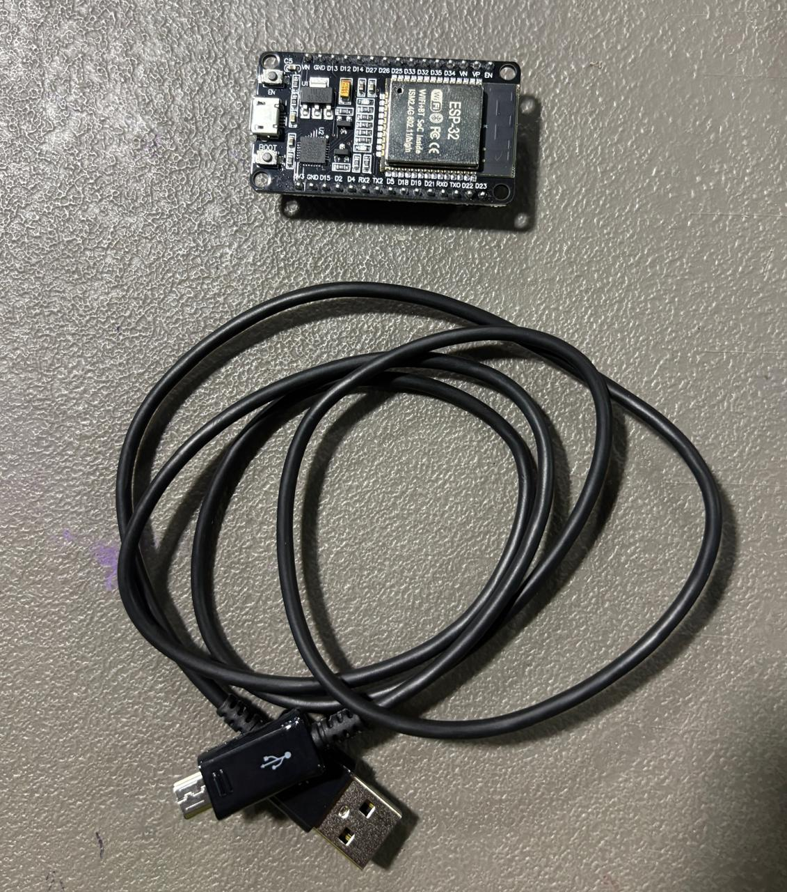
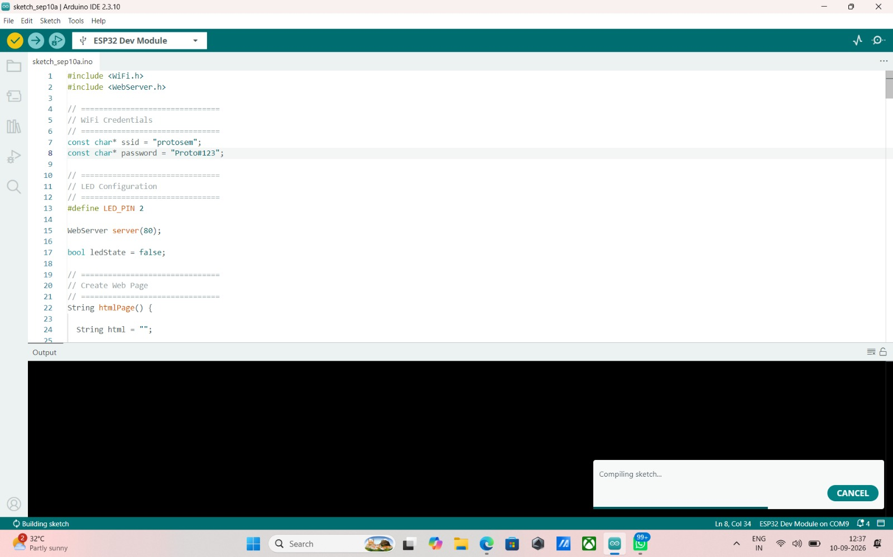
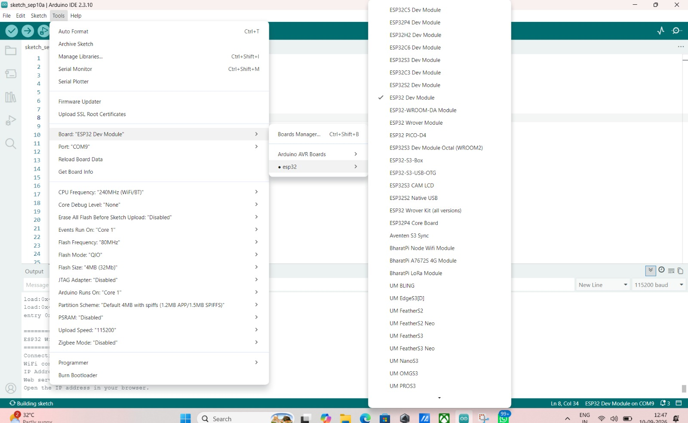
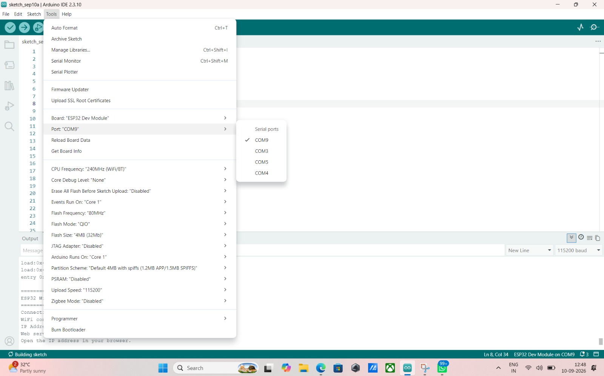
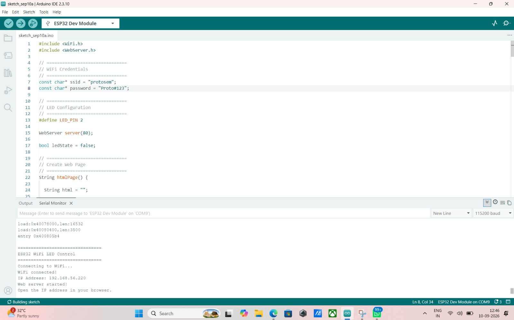
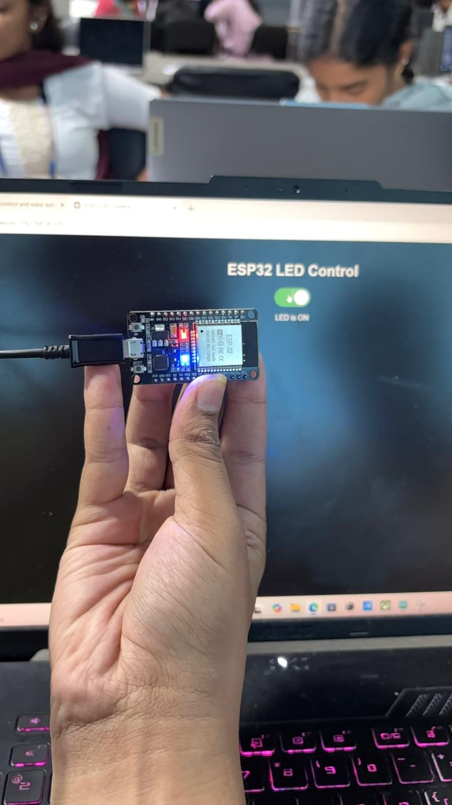
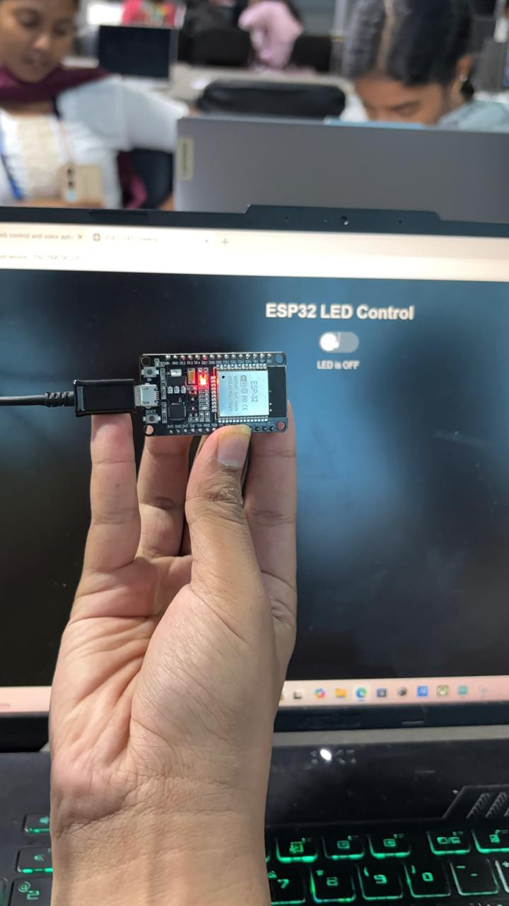
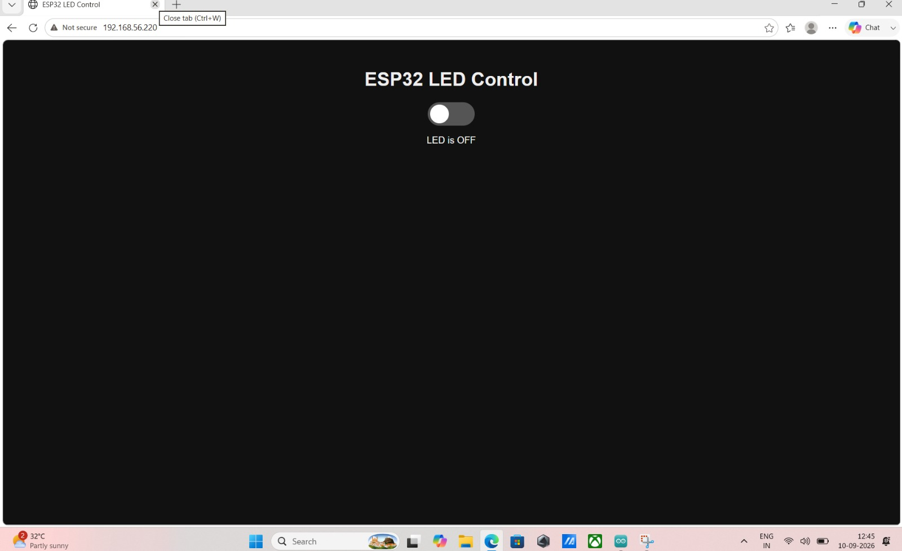
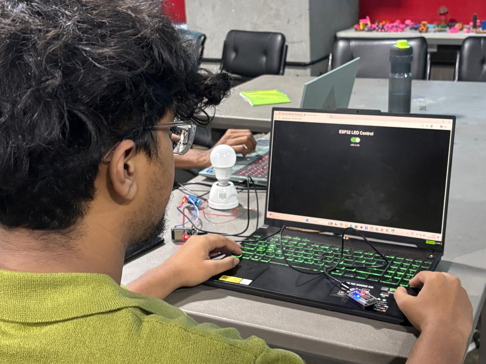

01Overview
The objective is to control a physical LED from a webpage. Normally a device needs a physical switch or a cable to a computer; here the ESP32 joins Wi-Fi, hosts its own webpage, and any phone or laptop on the same network becomes the remote control.
02Concepts
ESP32 web server
The ESP32 connects to Wi-Fi, gets an IP address and listens on port 80. Every HTTP request it receives is answered with an HTML page or an action.
Browser ↔ ESP32
The browser sends an HTTP GET request to the ESP32's IP address and the ESP32 replies with the HTML control page. Both talk over the same Wi-Fi network.
Sending a command
Each button points to a route such as /on or /off. When the ESP32 receives that route, it sets the LED pin HIGH or LOW.
03System Design
04Hardware & Software
Hardware
- ESP32 Dev Module (WROOM-32)
- Micro-USB cable (data-capable)
- Laptop / PC on the same Wi-Fi network
No breadboard or external LED is used — the sketch drives the ESP32 module's onboard LED on GPIO 2.
Software & platforms
- Arduino IDE 2.3.10
- ESP32 board package (esp32 by Espressif)
- WiFi.h and WebServer.h libraries
- Any web browser on the same network

05Wiring / Setup
No external wiring is required for this task. The onboard LED on the ESP32 dev board is wired internally to GPIO 2, and the sketch below drives that pin directly — connect the board to the laptop with the USB cable and it is ready to run.
| ESP32 pin | Connects to | Purpose |
|---|---|---|
GPIO 2 | Onboard LED (built in) | digitalWrite() toggles it HIGH/LOW from /on and /off |
| USB | Laptop | 5V power, plus the serial/upload connection |
06Implementation
// task1_esp32_webserver.ino
#include <WiFi.h>
#include <WebServer.h>
// ================================
// WiFi Credentials
// ================================
const char* ssid = "protosem";
const char* password = "Proto#123";
// ================================
// LED Configuration
// ================================
#define LED_PIN 2
WebServer server(80);
bool ledState = false;
// ================================
// Create Web Page
// ================================
String htmlPage() {
String html = "";
html += "<!DOCTYPE html><html><head><title>ESP32 LED Control</title>";
html += "<style>body{background:#000;color:#fff;text-align:center;font-family:Arial;padding-top:80px;}";
html += "h1{font-size:28px;} .switch{position:relative;display:inline-block;width:60px;height:34px;}";
html += ".switch input{display:none;} .slider{position:absolute;top:0;left:0;right:0;bottom:0;background:#555;border-radius:34px;transition:.3s;cursor:pointer;}";
html += ".slider:before{position:absolute;content:'';height:26px;width:26px;left:4px;bottom:4px;background:white;border-radius:50%;transition:.3s;}";
html += "input:checked + .slider{background:#4CAF50;} input:checked + .slider:before{transform:translateX(26px);}</style></head><body>";
html += "<h1>ESP32 LED Control</h1>";
html += "<label class='switch'><input type='checkbox' id='ledSwitch' onchange='toggleLED()' " + String(ledState ? "checked" : "") + "><span class='slider'></span></label>";
html += "<p id='status'>LED is " + String(ledState ? "ON" : "OFF") + "</p>";
html += "<script>function toggleLED(){var xhr=new XMLHttpRequest();var state=document.getElementById('ledSwitch').checked;";
html += "xhr.open('GET', state ? '/on' : '/off', true);xhr.onload=function(){document.getElementById('status').innerText='LED is '+(state?'ON':'OFF');};xhr.send();}</script>";
html += "</body></html>";
return html;
}
// ================================
// Route Handlers
// ================================
void handleRoot() { server.send(200, "text/html", htmlPage()); }
void handleOn() { ledState = true; digitalWrite(LED_PIN, HIGH); server.send(200, "text/plain", "LED is ON"); }
void handleOff() { ledState = false; digitalWrite(LED_PIN, LOW); server.send(200, "text/plain", "LED is OFF"); }
void setup() {
Serial.begin(115200);
pinMode(LED_PIN, OUTPUT);
digitalWrite(LED_PIN, LOW);
Serial.println("================================");
Serial.println("ESP32 WiFi LED Control");
Serial.println("================================");
Serial.print("Connecting to WiFi...");
WiFi.begin(ssid, password);
while (WiFi.status() != WL_CONNECTED) {
delay(500);
Serial.print(".");
}
Serial.println();
Serial.println("WiFi connected!");
Serial.print("IP Address: ");
Serial.println(WiFi.localIP());
server.on("/", handleRoot);
server.on("/on", handleOn);
server.on("/off", handleOff);
server.begin();
Serial.println("Web server started!");
Serial.println("Open the IP address in your browser.");
}
void loop() {
server.handleClient();
}Key sections, in my own words:
- Wi-Fi + web server setup —
setup()connects to the protosem network, then starts aWebServeron port 80 and prints the assigned IP address to the Serial Monitor so I know where to point the browser. - htmlPage() — builds the dark-themed page with the toggle switch shown in the screenshots, and reflects the LED’s current state (checked/unchecked, ON/OFF text) whenever the page loads.
- /on and /off routes —
handleOn()andhandleOff()setLED_PINHIGH or LOW and updateledState. - Client-side JS —
toggleLED()reads the switch and fires an XMLHttpRequest to/onor/offwithout reloading the page, so the toggle feels instant. - loop() — calls
server.handleClient()continuously so the ESP32 keeps answering browser requests.

07Configuration
- Enter your Wi-Fi name and password in the sketch
- Upload it and read the ESP32 IP address in the Serial Monitor
- Open that IP in a browser on the same network



08Evidence




09Challenges & Fixes
- The IP address kept changing between test runs — the first time I ran the sketch I bookmarked the IP from the Serial Monitor, but after restarting the router the ESP32 was handed a different address by DHCP and the old bookmark just timed out. I got into the habit of re-opening the Serial Monitor after every power cycle and reading the printed
WiFi.localIP()line before touching the browser, instead of assuming the address would stay the same. - The LED didn’t respond the first time I toggled it — I'd initially written the sketch expecting an external LED on a GPIO pin with a resistor, the way most tutorials set it up, but the ESP32 Dev Module I'm using only has the onboard LED wired to GPIO 2. Nothing happened when I hit the switch because I was driving the wrong assumption, not the wrong pin. Once I set
LED_PINto 2 and pointed the code at the onboard LED instead of external wiring, it toggled correctly on both the board and the web page. - The page wouldn’t load on my phone at first — my laptop was on the protosem Wi-Fi network but my phone had fallen back to mobile data, so the IP printed in the Serial Monitor was unreachable from it. The fix was just making sure both devices were joined to the same network before entering the address — an easy thing to overlook since the browser gives no error explaining why the page won't load.
10Reflection
Building this made the request/response cycle feel concrete instead of abstract. Every time I tap the toggle, the browser fires off a plain GET request to /on or /off, the ESP32's WebServer matches that path to a handler, flips the pin, and sends a short text response back — there's no magic in between, just a tiny device on my network answering HTTP requests the same way a real web server would. Watching the Serial Monitor log each request as I clicked the switch made it obvious that the "web" here is really just my laptop and the ESP32 talking directly to each other over Wi-Fi.
If I were to take this further, I'd add proper state feedback instead of trusting the client-side toggle blindly — right now the page assumes the request succeeded rather than confirming the LED's actual state. I'd also like to control more than one LED from the same page, and add at least basic authentication before opening this up to anything beyond a closed classroom network, since right now anyone on the same Wi-Fi can hit /on and /off with no login at all.
Other tasks
Adafruit IO Dashboard & MQTT
Control the LED from an Adafruit IO cloud dashboard using MQTT.
TASK 3IFTTT + Adafruit IO IoT Automation
Trigger an IFTTT applet that drives an Adafruit IO feed and the ESP32 automatically.
TASK 4Firebase IoT Monitoring Dashboard
Monitor temperature, humidity and light in a login-protected Firebase dashboard and control a bulb.
TASK 5Firebase Logging, Automation & Data Export
The complete system: automatic LDR lighting, Firebase data logging, charts and CSV export.